Hello, I'm
Sabin Baral
Polymer Researcher and Engineer
Currently Researching: Block Copolymer Self-Assembly
Experience
1+ years Research
Education
Pursuing BSc
Hello, I'm
Polymer Researcher and Engineer
1+ years Research
Pursuing BSc
Browse My Recent
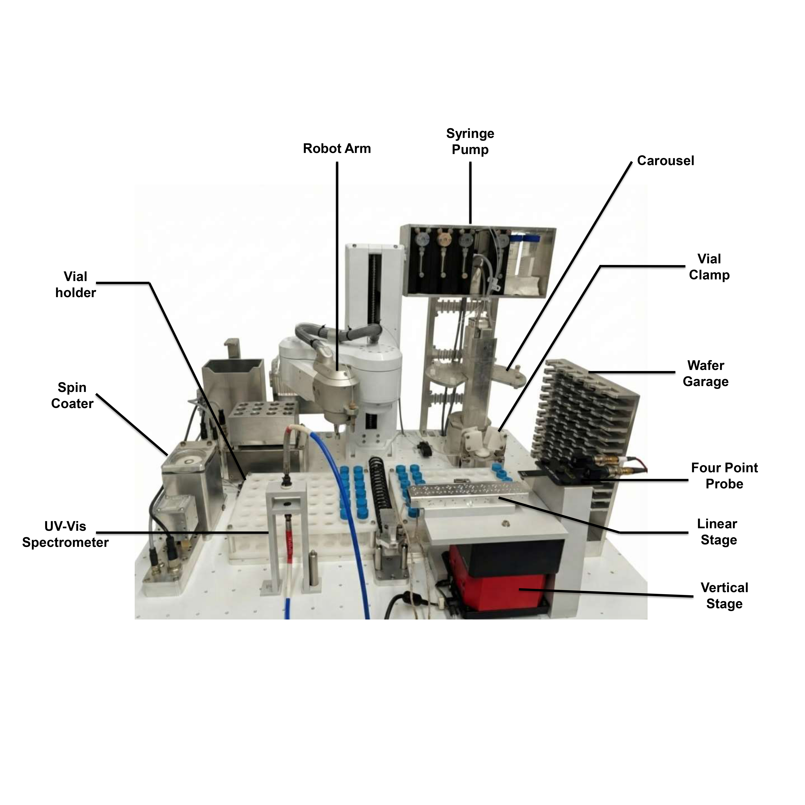
November 2025 - Present
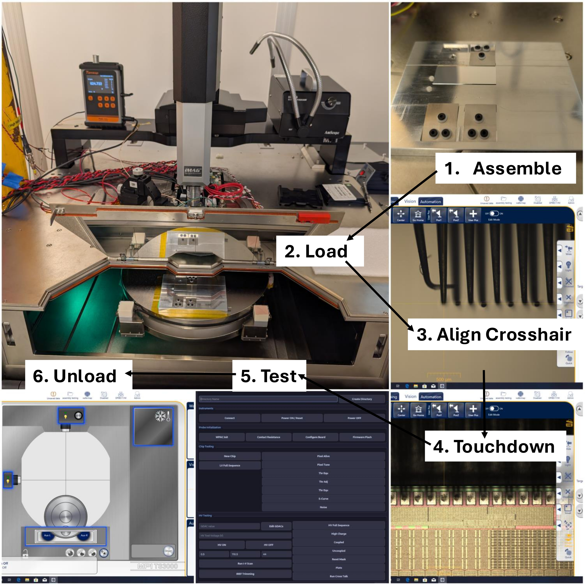
May 2026 - August 2026
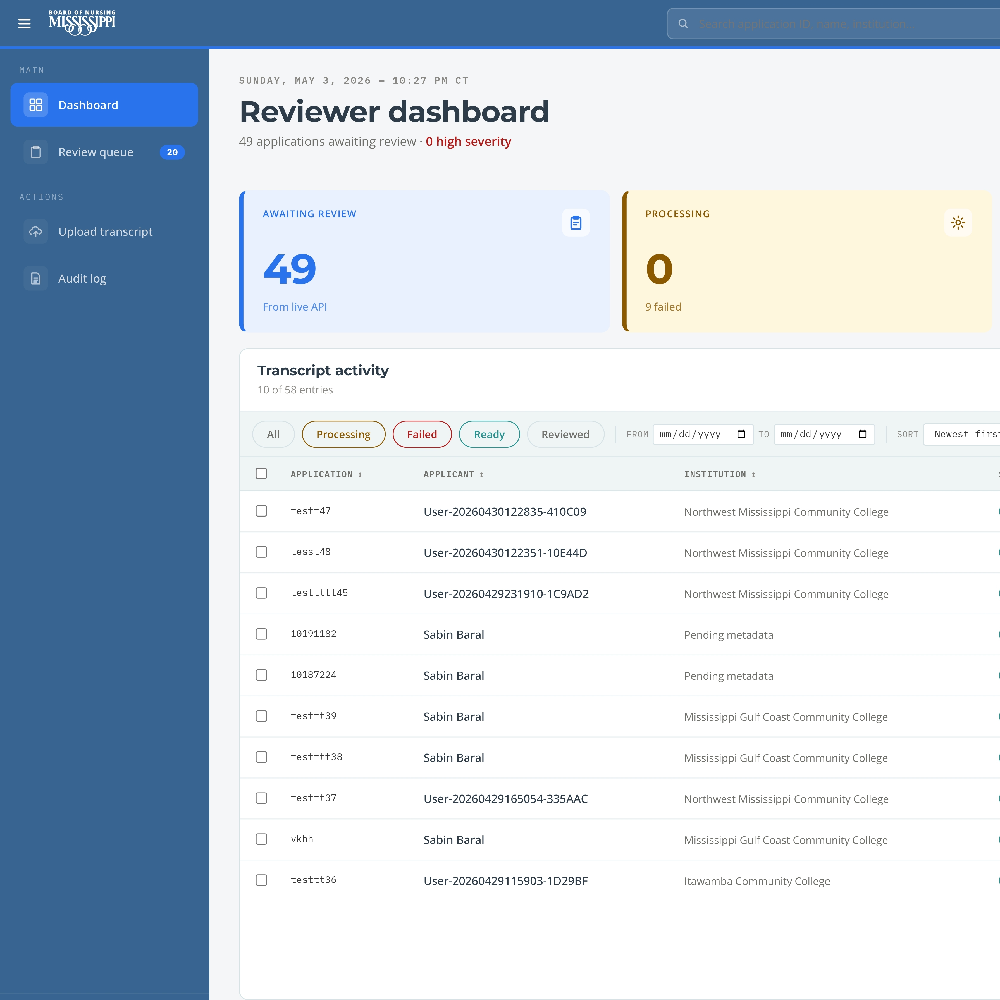
March 2026 - May 2026

May 2025 - Present
Jan 2025 - May 2025
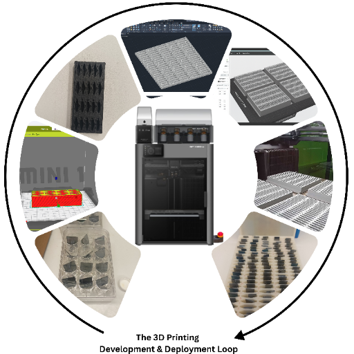
Dec 2024 - Present
Academic Contributions
Upreti, S., Xu, L., Moniruzzaman, M., Wang, Y., Adhikari, K., Baral, S., Patton, D., Ma, B., Xu, J., Li, R., Zhu, C., Xia, W., & Gu, X. (2026). A Robotic High-Throughput Grid-Search Platform for Mapping Phase Behavior in Triblock Copolymer−Homopolymer Blends. ACS Nano, 20, 17303-17315. https://doi.org/10.1021/acsnano.6c01299
Systematically mapped the phase behavior and Order–Disorder Transition (ODT) boundaries for triblock copolymer (PS-b-PB-b-PS and PS-b-PI-b-PS) blends using the NOVA robotic platform. Investigated domain spacing evolution across three molecular weight regimes (wet-brush, dry-brush, and macrophase separation) using GISAXS and AFM, supported by coarse-grained molecular dynamics simulations to confirm homopolymer distribution.
ACS Fall 2026 National Meeting
Poster Presentation
Presenting research on robotic grid-search methodologies and automated workflows for accelerated polymer morphology studies.
Research Conducted In Collaboration With
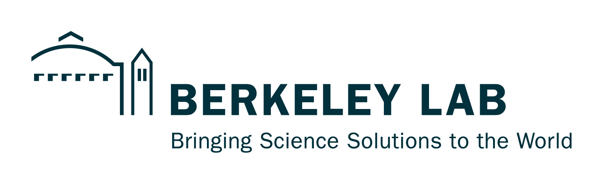
LBNL / ALS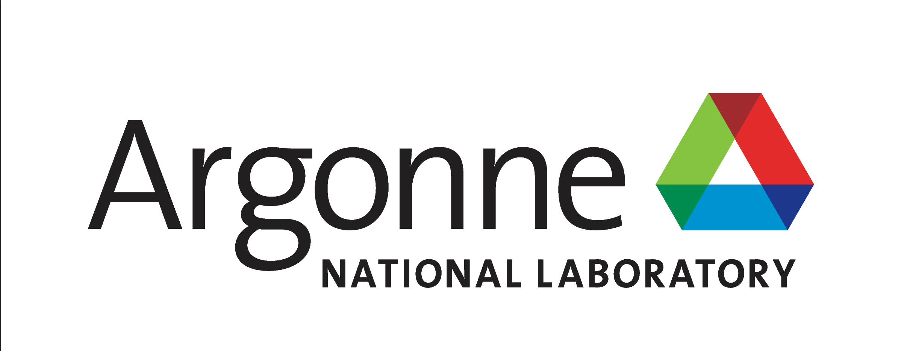
Argonne / NST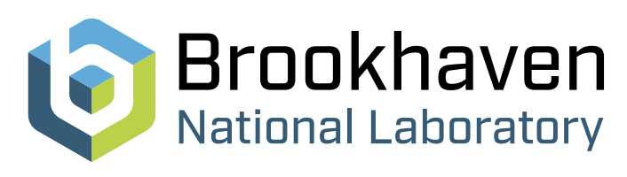
Brookhaven / NSLS-IIExplore My
This research focuses on developing efficient methodologies for fabricating and characterizing block copolymer thin films at scale. Block copolymers self-assemble into nanoscale structures that have applications in next-generation semiconductor manufacturing, filtration membranes, and energy storage devices. The high-throughput approach allows for rapid screening of processing conditions to optimize film morphology and properties.
As the lead undergraduate researcher on this project, I designed and executed the experimental workflow including:
Developed a streamlined workflow that reduced characterization time by 40% while maintaining data quality. Identified key processing parameters that influence domain spacing and orientation. Results contributed to understanding structure-property relationships in block copolymer systems. Currently preparing 300+ thin film samples for our next beamtime at ALS or NSLS.
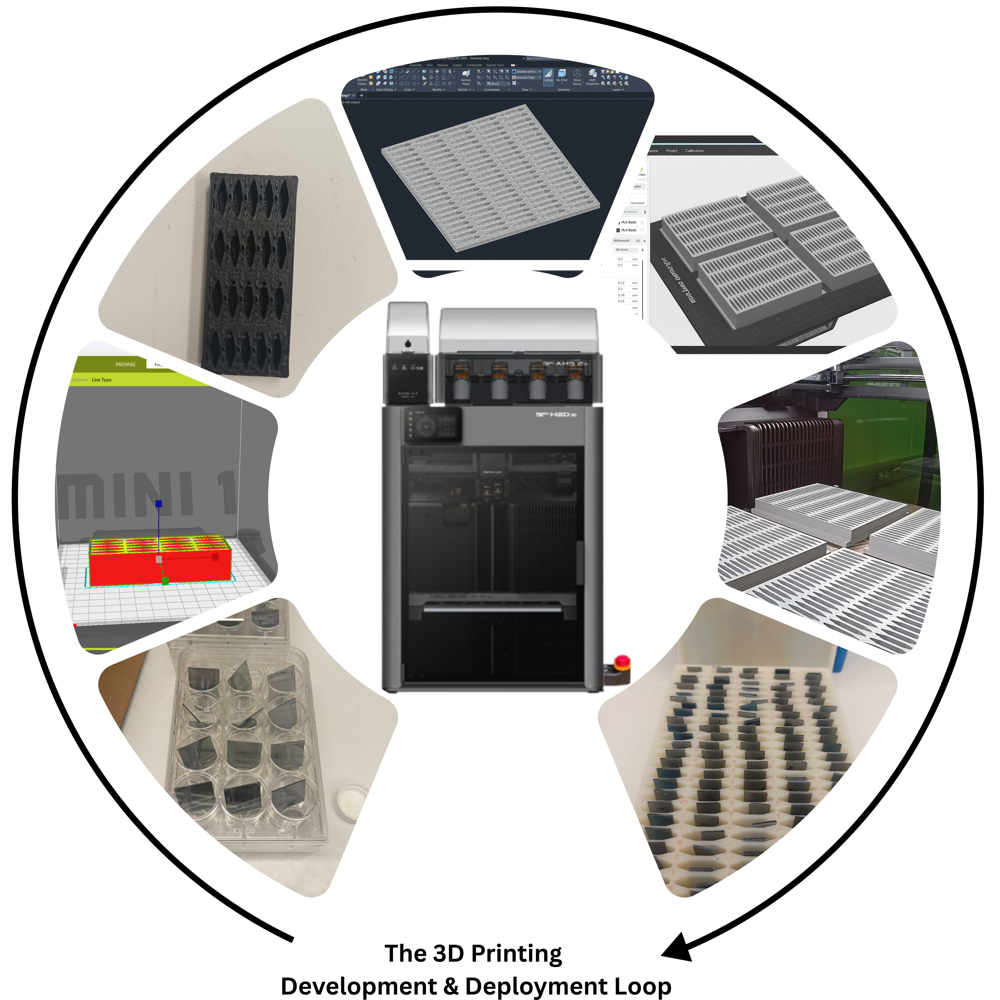
This project has evolved from solving everyday laboratory inconveniences to engineering critical infrastructure for automated research workflows. By leveraging additive manufacturing, I design and fabricate custom interfaces that bridge the gap between standard laboratory equipment and advanced robotic systems. Recent work focuses on high-throughput sample handling and automated characterization, enabling the integration of North Robotics arms and motorized stages into closed-loop experimental cycles. This initiative demonstrates how rapid prototyping can unlock new capabilities in materials science research.
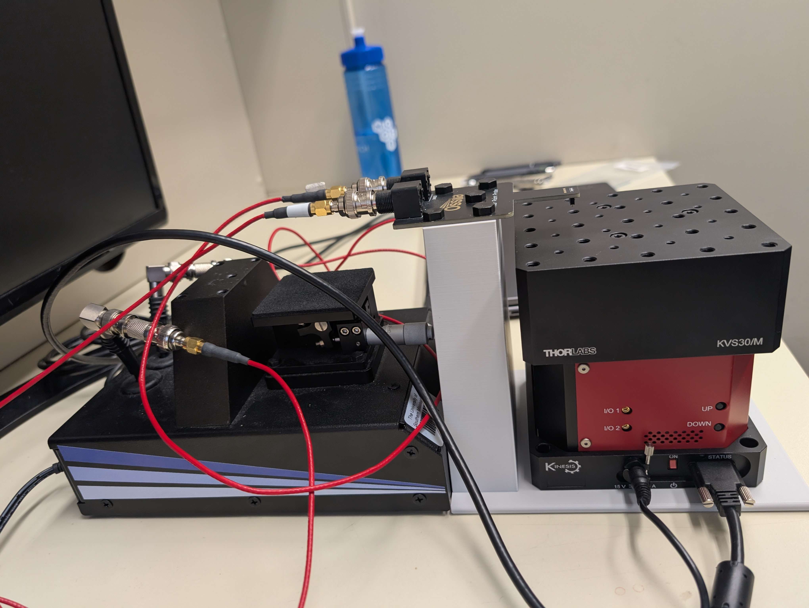
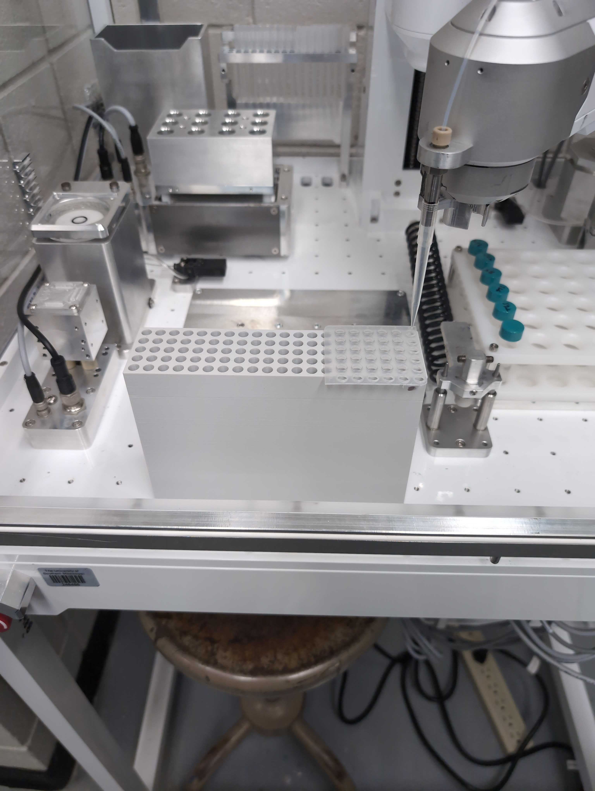

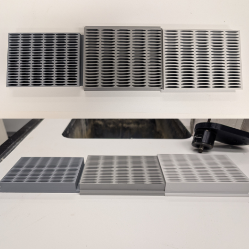
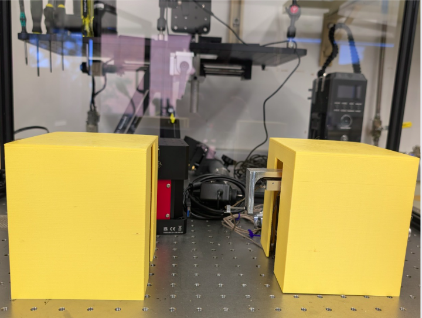
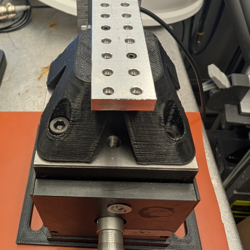
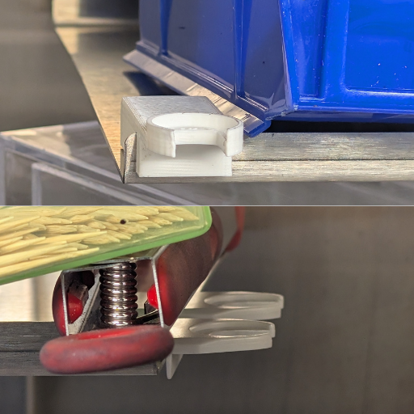
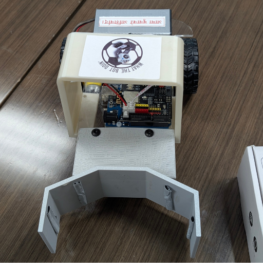
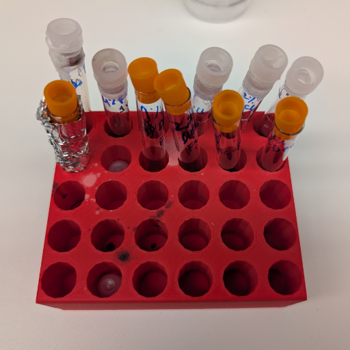
End-to-end ownership of the design and fabrication process:
Successfully designed and fabricated over 20 unique solutions including custom sample holders for characterization equipment, modular storage systems for laboratory consumables, and specialized fixtures for experimental setups. These tools have improved lab efficiency and reduced equipment costs. The project has also enhanced my skills in design thinking, materials selection, and practical engineering problem-solving.
Get in Touch
Thank you for reaching out. I'll get back to you soon!
OR